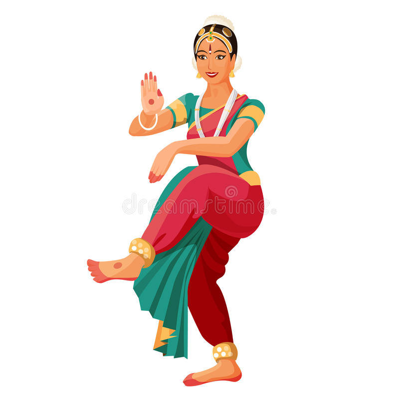

Bharatnatyam
Bharatanatyam is a dance which is classical in Tamil nadu .It contains mudra's it shows or its acts about a particular god ,animal ,action, yoga, and more on . Shiva thandavam done by lord Shiva is known as bharatanatyam .